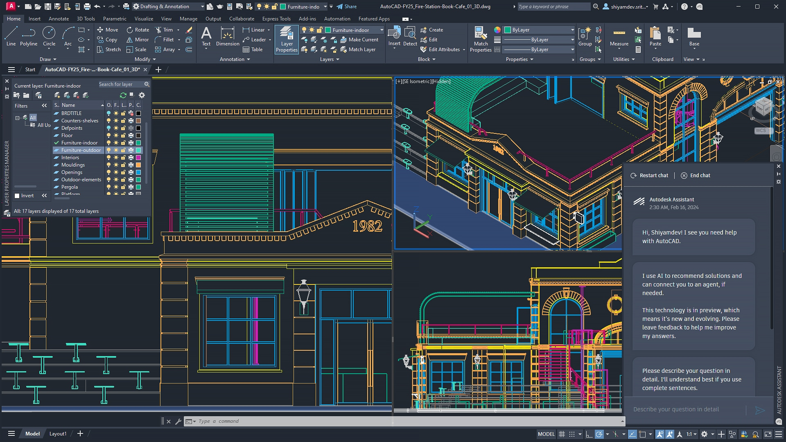

As an innovative and problem-solving Automation and Robotics Engineer, I have a strong academic foundation from Amrita Vishwa Vidyapeetham and hands-on experience in various projects. I excel in CAD designing and have received numerous accolades, including titles from prestigious techfests. My keen interests lie in CAD modeling, mini rovers, and path-tracking robots.

As an Automation and Robotics Engineer, I have extensive knowledge and experience in CAD designing. My skills in creating precise and detailed models have been honed through various projects and coursework. I have received numerous accolades for my CAD work, including titles from prestigious techfests. CAD modeling is a key area of my expertise and passion.

A Line Follower is an autonomous robot designed to follow a path marked by a high-contrast line on the floor. It uses sensors to detect the line and continuously adjusts its direction to stay on track. This robot is commonly used in education to teach robotics and in industry for automated material transport. Line Followers exemplify the principles of feedback systems and control algorithms.
A robot that navigates a line maze using sensors. Applies algorithms to explore and find the optimal path. Uses the "left-hand rule" or "right-hand rule" to turn. Used in robotics competitions and automated guided vehicles.

As an Automation and Robotics Engineering student, I have developed various innovative projects to enhance efficiency and safety across multiple fields. My key projects include a solar panel cleaning drone, a fire extinguisher ball throwing drone, a multi-purpose agricultural rover, and a lifebuoy rescue drone. These projects utilize advanced drone and sensor technologies, demonstrating my problem-solving skills and technical expertise. Guided by industry experts, these initiatives have improved energy production, firefighting capabilities, agricultural productivity, and water rescue operations.